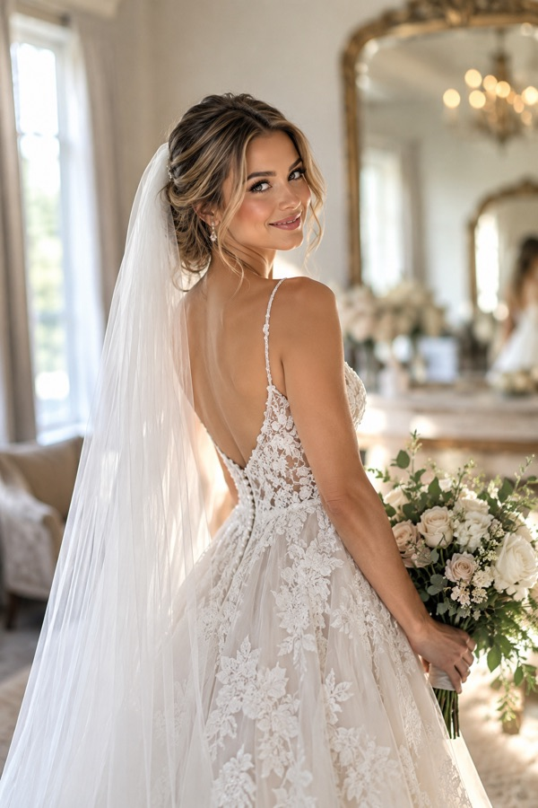
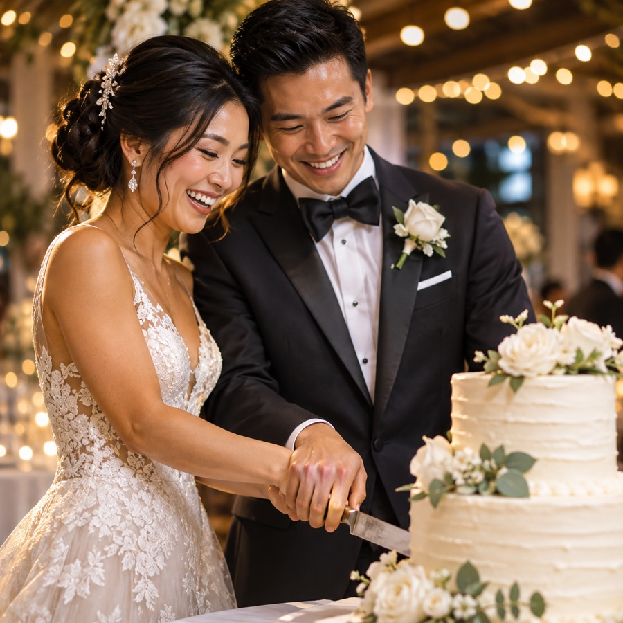

What we do
Venue sourcing
Historic barns, downtown rooftops, garden estates and hilltop chapels. We shortlist venues that fit your guest count, style and budget, and we tour them with you.
Vendor coordination
Photographers, florists, caterers, bands, rentals and hair and makeup. We book, confirm and manage every contract and timeline.
Design and details
Color palette, florals, tablescapes, signage and lighting that tell your story.
Day-of management
Rehearsal, timeline, vendor arrivals, ceremony cues and a calm point of contact from first look to send-off.
About Juliet
Juliet Hayes has planned weddings in Middle Tennessee for nine years. She started Willow & Vow to give couples a planner who listens first and keeps every detail organized, so the day feels effortless.
Our promise
Every couple gets a clear plan, honest budget guidance and one dedicated planner from first call to final dance.
Gallery


Contact
Juliet Hayes, Lead Planner
Phone: (615) 555-0167 · Email: hello@willowandvow.example
Serving Nashville, Franklin, Leiper's Fork, Hendersonville and destination weddings across Middle Tennessee.
Hours: Consultations Monday–Friday 9 AM–6 PM · Weekend weddings by booking